Position sets perspective.
Moving the camera changes the relative distances to parts of a face or objects in a scene.
Assignment 1 · Part One · Fall 2026
Three experiments with one camera:
change where you stand, and the picture changes.
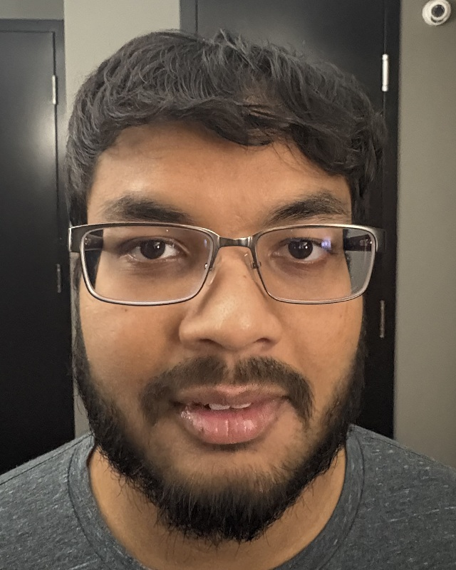
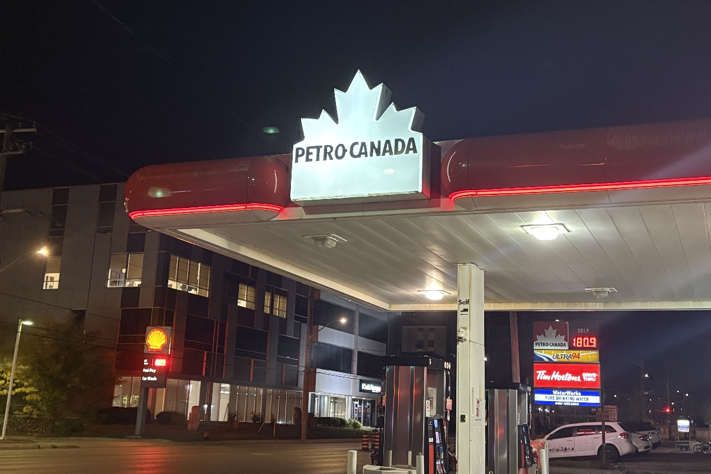
01 / Selfie: the wrong way vs. the right way
The portrait experiment compares a wide view with a more tightly zoomed view. To make the comparison easier to read, the display below uses a uniform scale, slight rotation, and crop to place the eyes at the same height and approximately the same spacing. Facial proportions are not reshaped.
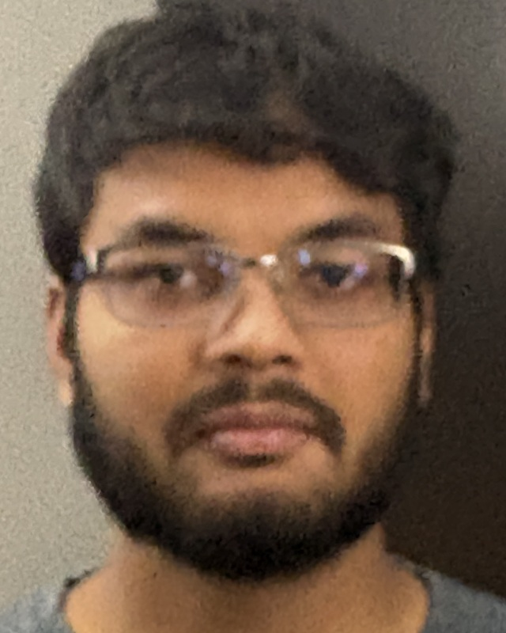
For a pinhole camera, a feature of physical size H at distance Z has projected size h = fH/Z. Close to a face, the nose is appreciably nearer to the camera than the ears, so it receives greater magnification. From farther away, those depth differences are smaller relative to the total distance, giving a less exaggerated relationship between facial features. Zoom changes framing; moving the camera changes perspective.
The wide portrait has a more prominent central face, while the zoomed portrait appears flatter. Expression, slight head rotation, and lighting also differ, so this is a visual comparison rather than a controlled measurement of facial dimensions. Exact camera-to-subject distances were not recorded in the supplied files.
Equivalent focal lengths come from the supplied image metadata. Both files report the same 2.22 mm physical lens; the longer equivalent view includes substantial digital zoom. The softer, noisier zoomed image demonstrates a detail trade-off, not a failure of the perspective principle.
01 / Capture and selection
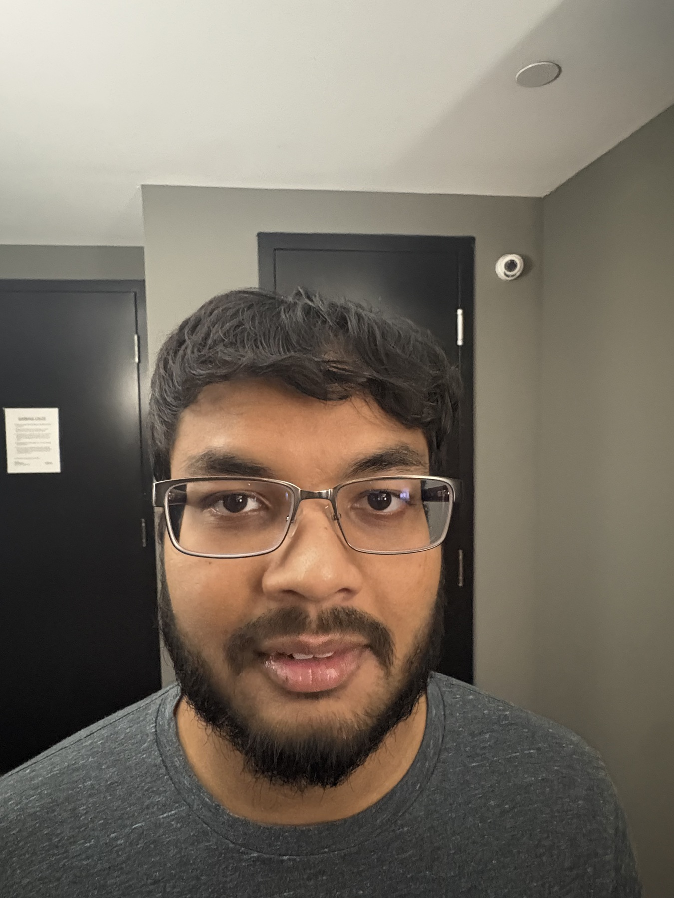
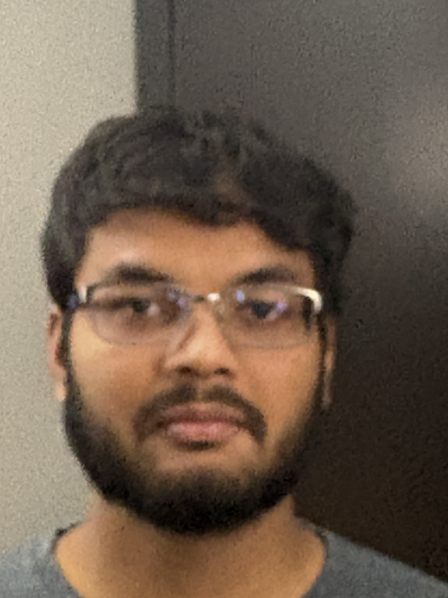
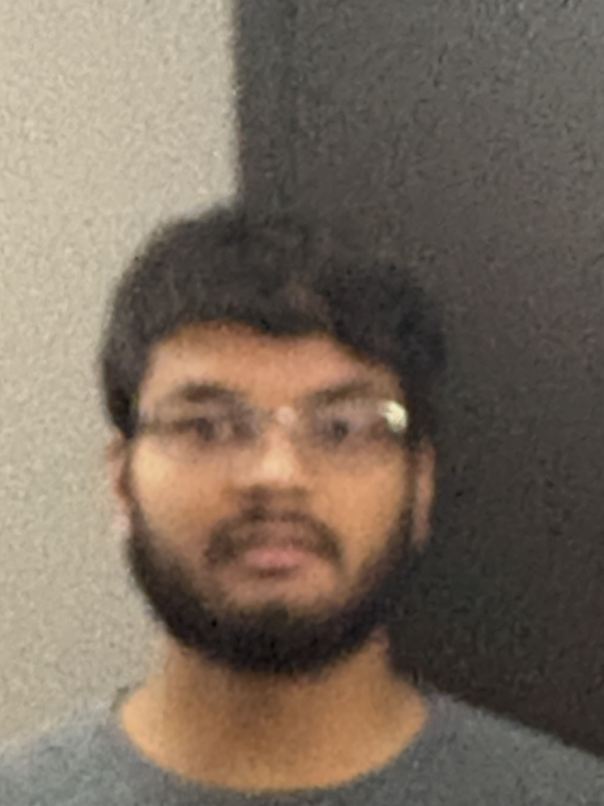
IMG_1196 is the stronger zoomed portrait for the main comparison: it retains more useful facial detail than the softer 165 mm alternative, IMG_1197. The original views are retained here so the display crop is transparent.
A crop or zoom from a fixed camera position enlarges all parts of the image together. It cannot reproduce the changes in relative size caused by changing the center of projection.
The matched views above use 200 pixels of eye-center separation in a 640 × 800 output. This display normalization does not establish identical facial pose or prove the camera’s physical travel distance.
02 / Architectural perspective compression
Of the two outdoor sets, IMG_1204 and IMG_1205 make the stronger comparison. The canopy, support columns, roadway, and buildings across the road remain visible. The alternate set, IMG_1206 and IMG_1207, is dominated by the sign and removes much of the depth context.
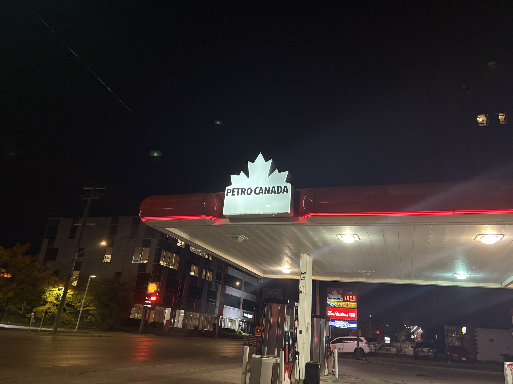
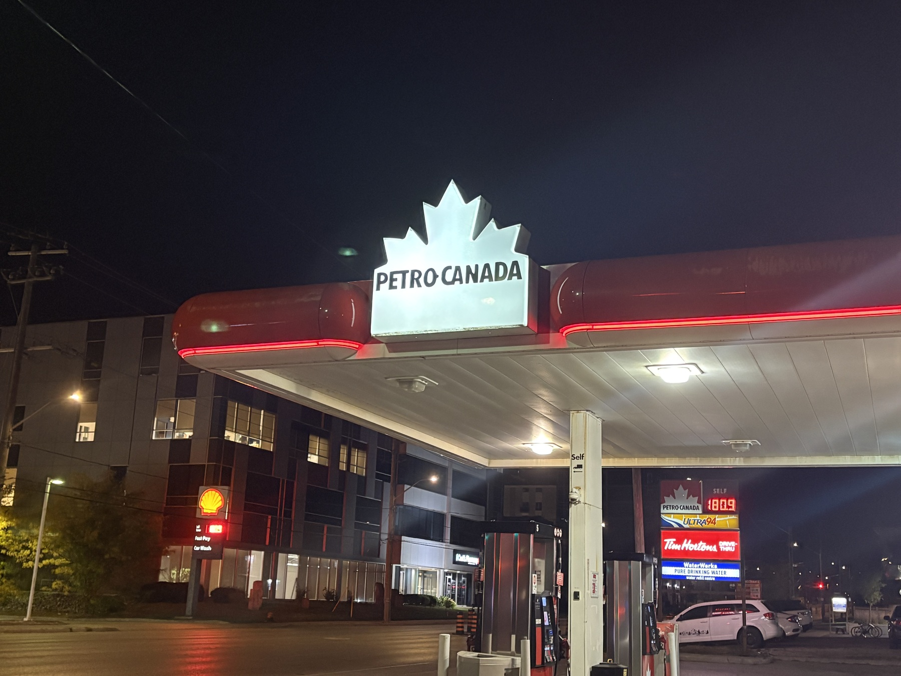
If a foreground object is at distance Z and a background object is a further ΔZ away, their relative apparent sizes depend on (Z + ΔZ)/Z, as well as their physical sizes. Increasing camera distance makes this ratio closer to one. With zoom adjusted to keep the foreground object the same size, the background looks larger relative to it: the scene appears flatter.
Zoom alone does not compress perspective. A change of camera position is essential. These captures are not perfectly matched in scale and tilt, so the perspective difference is subtle; the broad scene context makes this pair more useful than a close-up of the sign alone.
Metadata records a 5.96 mm physical lens for both selected outdoor images. The recorded equivalent focal lengths are 26 and 41 mm. Camera-to-scene distances were not measured.
02 / Compare at a common foreground scale
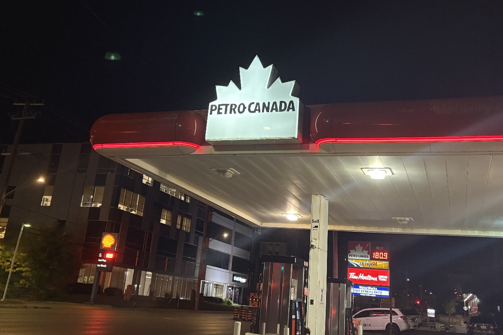
The lower edge of the foreground sign is scaled to approximately 220 pixels in both 1200 × 800 display crops. Compare the columns and distant building edges around it. Uniform scaling and cropping make that comparison easier, while retaining each image’s perspective. They do not correct camera tilt or make the original captures a perfectly controlled experiment.
The matched views supplement the original photographs; they are not a claim that the scene was framed identically in-camera.
03 / The Dolly Zoom
The subject stays approximately the same size while the surrounding space changes.
Play the loop, or open the animated GIF. Animation is available in the online report; selected frames appear in this PDF.
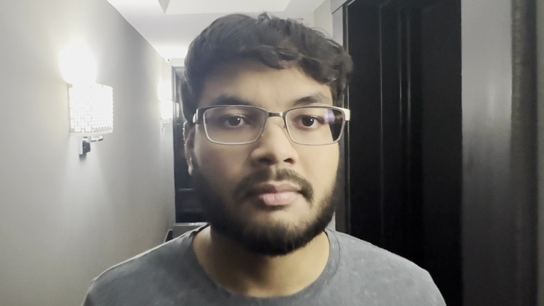
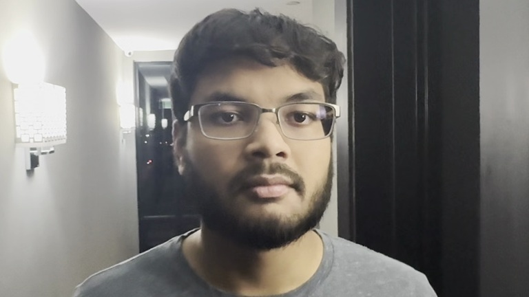
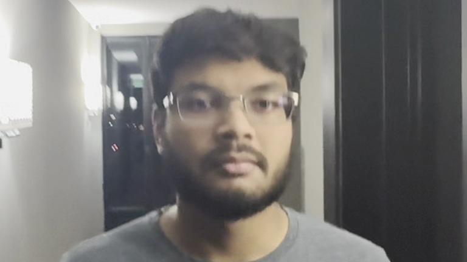
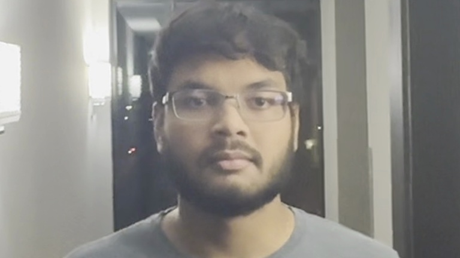
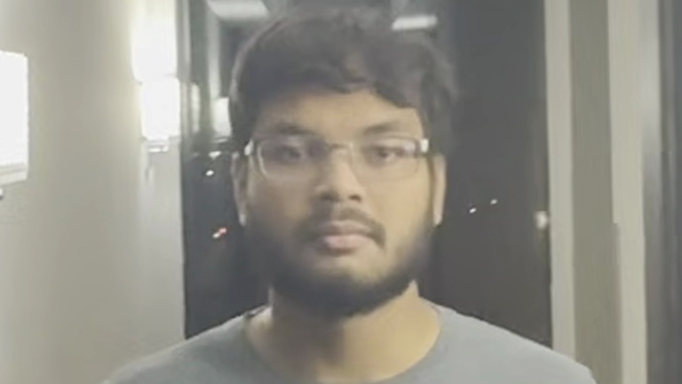
A dolly zoom combines camera movement with an opposing change in image magnification. Keeping the subject’s projected size h = fH/Z approximately constant requires f/Z to remain approximately constant. Background surfaces are at different distances, so their magnification does not remain constant in the same way.
This animation uses 25 selected frames from IMG_1203.MOV, between 6.66 and 8.26 seconds. The move-away phase reverses the selected approach sequence. Uniform cropping, resizing, and a small rotation adjustment keep the eye line steady, and the loop then returns to its starting view. The corridor’s changing geometry comes from the recorded frames.
Output: 768 × 432 pixels, 4.48-second loop. Measured eye-center separation after smoothing ranges from 98.9 to 101.1 pixels around a 100-pixel target. The same transform is applied to the whole frame; no independent background deformation or facial reshaping is used. Handheld movement and changing focus remain visible.
Capture notes
Moving the camera changes the relative distances to parts of a face or objects in a scene.
Focal length or cropping changes image scale. It does not, on its own, change the viewpoint.
Compensating magnification holds a foreground subject steady while depth relationships remain visible in the background.
Online report and animation: mokshtrehan.github.io/syde671-assignment1/part1/
| Experiment | Selected files |
|---|---|
| Portrait comparison | IMG_1195.HEIC + IMG_1196.HEIC |
| Portrait alternative | IMG_1197.HEIC |
| Architecture | IMG_1204.HEIC + IMG_1205.HEIC |
| Dolly Zoom | IMG_1203.MOV · frames 280–376, every fourth frame |
Photographs and video were supplied for this assignment. The original inputs are preserved locally. Web images are orientation-corrected JPEG derivatives; selected comparisons use the stated uniform crops and scales. The video export is silent.
Assignment reference: SYDE 671, Assignment 1, Fall 2026, Part One, “Becoming Friends with your Camera.” The three required exercises are portraits, architectural perspective compression, and the dolly zoom.